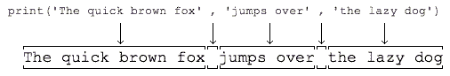

☰ 目录
第一个python程序
python 脚本的执行是解释执行。
python 程序的运行
有如下python 文件
# calc.py
print(100 + 200 + 300)
在终端的运行：
C:\work>python calc.py
600
使用文本编辑器
使用sublime 或者 notepad， 但是绝对不能用Word和Windows自带的记事本。Word保存的不是纯文本文件，而记事本会自作聪明地在文件开始的地方加上几个特殊字符（UTF-8 BOM）
直接运行程序
常加的头缀，可以直接运行 .py 文件。在Windows上是不行的，但是，在 Mac和Linux上是可以的，
#!/usr/bin/env python3
print('hello, world')
命令给hello.py以执行权限：
$ chmod a+x hello.py
就可以直接运行hello.py了，比如在Mac下运行:

输出
1- print()函数也可以接受多个字符串，用逗号“,”隔开，就可以连成一串输出：
>>> print('The quick brown fox', 'jumps over', 'the lazy dog')
The quick brown fox jumps over the lazy dog
遇到逗号“,”会输出一个空格，因此，输出的字符串是这样拼起来的：

遇到逗号“,”会输出一个空格，因此，输出的字符串是这样拼起来的：
2- print()也可以打印整数，或者计算结果：
>>> print('100 + 200 =', 100 + 200)
100 + 200 = 300
输入
1- 现在，你已经可以用print()输出你想要的结果了。但是，如果要让用户从电脑输入一些字符怎么办？Python提供了一个input()，可以让用户输入字符串，并存放到一个变量里。比如输入用户的名字：
>>> name = input()
Michael
当你输入name = input()并按下回车后，Python交互式命令行就在等待你的输入了。这时，你可以输入任意字符，然后 按回车后完成输入。
1- input() 可以给出输入的提示信息：
name = input('please enter your name: ')
print('hello,', name)
练习
请利用print()输出1024 * 768 = xxx
#!/usr/bin/env python3
# -*- coding: utf-8 -*-
'''
filename: ch01/01.py
message: notes for liaoxuefeng in learning pyhon 3.7
'''
name1=input('pleas enter first num:')
name2=input('please enter second num:')
print(int(name1))
print(int(name2))
print('%s * %s=' % (name1,name2), int(name1) * int(name2))
# pleas enter first num:1
# please enter second num:2
# 1
# 2
# 1 * 2= 2